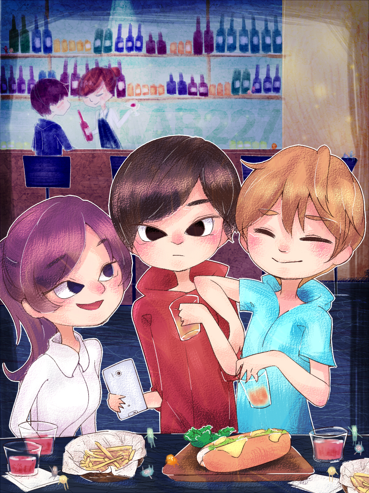

【主線故事 Vol.1】lab227
時間 22:00～24:00
代表色 橘色
(一群朋友在227酒吧慶祝生日)
「乾杯！」227總是點著黃橙色的燈光，溫暖柔和。
「喔！這杯內閣羅尼也太苦了吧！」壽星皺眉道，只是再怎麼苦，也苦不過還在實驗室的夥伴的肝就是了。
「我來喝喝……真的好苦喔！」衆人鬨笑起來，店內充滿了快活的空氣。
『看來你們的人生都太甜了呢！』研究生的事，能算是甜嗎？這會兒又有酒上來了。
「不好意思～請問柯夢波丹是誰的？」那女孩的唇膏是珊瑚橘色的，挺好看。
「我的，放這裡就好，謝謝妳。」
甜蜜蜜的我，自然要配甜一點的小姐姐跟甜一點的酒。苦，那是別家實驗室的事情了。